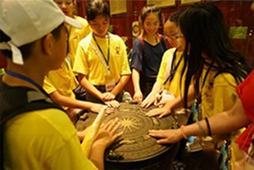

【文创视域】
文化生态保护区是指在一个特定的区域中，通过采取有效的保护措施，修复一个非物质文化遗产。
目前，广西生态保护区总体规划文本已经完成初审工作。继续协调推进“壮族文化(百色)生态保护区”申报国家级文化生态保护区工作。推进自治区级侗族文化(三江)、苗族文化（融水）、瑶族文化（金秀）和桂派戏曲曲艺文化（桂林）文化生态保护区建设。积极推进中越边境非物质文化遗产保护惠民富民示范带建设。在边境8个县区建设了一批非物质文化遗产保护示范点。
数字化保护文物
逼真地表现文化遗产场景、查询文物信息。其技术的应用，不仅成为广西文物遗产数字化保护的标杆，并可推广至国内其他皇陵和王陵遗址中。


《寻梦·刘三姐》在广西宜州首演 裸眼3D走进现实
通过整合时下新型的科技手段，生动再现刘三姐歌谣的起源、发扬、弘扬和传承经历，打造宜州刘三姐文化旅游品牌。
电影推广
“恭城瑶家大院影视旅游基地”我国影视行业内首个开放式的互联网影视专业景区一恭城瑶家大院互联网影视旅游基地。

华裔青少年柳州“寻根”
41名来自美国的华裔青少年在广西柳州市开展“寻根”之旅，体验壮乡传统文化。分别来自美国的17个州，43座城市。
传 承 才 是 最 好 的 发 展
贵港市2018年“戏曲走进校园”
巡回
演出活动走进大岭初中

三江：侗族“非遗”文化进校园

推行使用壮文 保护传统“文化基因”

青少年学生的价值取向代表着国家的未来,从小打下深厚的中华文化根底,关系到文化自觉和文化自信的形成,关系到国家文化现代化建设目标的实现和中华文化对世界文明的贡献。优秀的传统文化是好东西,校园也是好地方,孩子更是未来的希望。加大传统文化教育方面的培训与学习,因为他们的传统文化素养将直接影响到下一代青少年传统文化的继承与创新。”孩子自小接触传统文化,让优秀的传统文化得以代代相传.